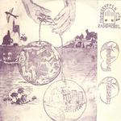

Home Artist links Label link

Musikgruppen Radiomöbel - Gudang Garam
| Artist: | Musikgruppen Radiomöbel |
| Title: | Gudang Garam |
| Label: | Transsubstans Records 003 |
| Length(s): | minutes |
| Year(s) of release: | 1978/2005 |
| Month of review: | [12/2005] |
Line up
Göran Andersson - bass
Carin Bohlin - vocals
Andrus Kangro - guitar
Richard Moberg - keys
Mikael Skoog - drums
Anders Ericsson - roadie
Tracks
| 1) | Gudang Garam | 0.01
|
| 2) | Höstsâng | 7.25
|
| 3) | Fase | 6.55
|
| 4) | E-matt | 8.25
|
| 5) | Vaggvisa | 3.45
|
| 6) | Kylie | 0.41
|
| 7) | Flugornas Morgon | 15.00
|
| 8) | Finalien | 3.30
|
Summary
Named after a famous Indonesion brand of cigarettes, this Swedish band
released this album in the seventies.
The music
After the nonsense opener, Gudang Garam,
Höstsâng is a typically seventies tune. The guitar sound is
moody and ethereal, the drummer plays in a very percussive mode. I am reminded
of Nektar and Earth & Fire here. Underneath the melancholic guitar, the keys
softly churn, which signifies a strong difference with E & F where the keys
are often on the foreground. Still the atmosphere is similar. It is hardly noticed when we move to the next song, Fase. Here we do get some Swedish vocals sung by
Carin Bohlin. There is some more pace here, but the recording is very lo-fi,
and the production, for these times, substandard. The guitar work also becomes
less melodic, and less appealing. The second half of the track is more melodic
again. The vocals of Carin by the way are female vocals, and are quite high
pitched and somewhat vague. They do not have the clarity of say Annie Haslam.
We flow right into E-matt, the synth player keep the tones up. When you hear
this, your first thought will be old E.M., but the drums do lend, in this case,
quite a bit of sinistry. Although less weird, I am reminded of Jacula here, and
maybe a bit of the feel of ELP's The Sage. Then the pace sets in, promising,
promising. The guitar is quite a bit fuzzier now, and I guess the band is indeed
more psych than prog. Then the music relaxes somewhat, and the synths get more
room.
We have now moved to the second side of the album.
On Vaggvisa we hear the vague vocals of Bohlin again. I did not miss her yet.
I also do not hear much difference between the vocal lines on this song and
Fase. Then the band takes the song away in the direction of rock 'n' roll and
a bit of whooping and yelling. Kylie is back to the weirdness of the one second
opener. Thus we move into Flugornas Morgon, by far the longest track on this
album. It has the same full synths of the other instrumental tracks, and slowly
slowly the song develops. After five minutes or so, Bohlin comes in again, this
time her voice resounding loudly. I still have to think of Earth & Fire at
these points, although Jerney Kaagman is the better singer. The guitar plays
some nice themes and transitions here too. For the rest it is simply a lengthier
version of say E-matt.
Finalien does not bring much new, although the drummer plays rather on the foreground
in his very percussive style (indeed I would call him a percussionist on a drumkit).
Conclusion
Although not devoid of weaker tracks, especially those with the melancholic
female vocals, this is fully ethereal psych album. There is not much fuzz or
raw energy, indeed the band plays a relaxed, but laden kind of psych in which
the melodies and the synths play a strong role and building up the right kind
of atmosphere. The album is from the seventies and that can certainly be heard
in both the music as the production. But as a means of making this album
available to the psych audience, this is certainly a worthy reissue, with plenty
of melody and atmosphere.
© Jurriaan Hage